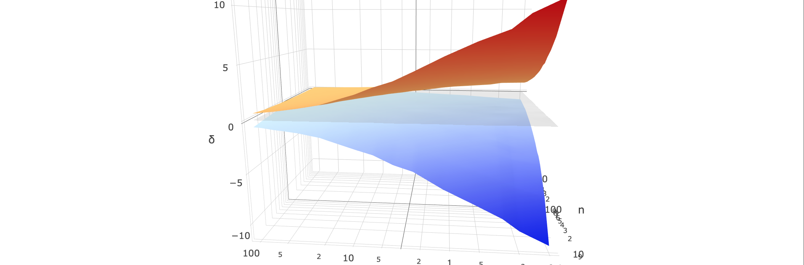

Last November someone e-mailed me a strange request, they wanted to use a method from a paper I wrote in 2013. Shocking I know. I had included in the paper a link to some IDL code meant to reproduce the figures, of course, it was already broken. It had aged badly, inaccessible a full 2 years ahead of Jeff Rotheberg's prediction ("digital information lasts forever — or five years, whichever comes first"). After digging through my file system and recovering the old script I had the feeling that if the link not been broken it would probably not have been of much help. Needless to say, at the time I wrote the paper I thought the approach I took was great. I didn't know much about coding then, and I hadn't heard of version control either. Although, to be fair, no one in the field I was working in talked about these issues or showed much interest in code. In fact, asking to see peoples code was a good way to loose friends ("You don't trust me?" or "You want to steal my work?"). A few years on, and I now know enough to see that approach I took was not terribly helpful if the aim was to create reproducible science.
Driven by examples from a new generation of researchers who break from the "publish or perish" model and instead operate under the "share and thrive" philosophy (people like Titus Brown, Jessica Hamrick, Wes Mckninney, and Johnny Wei-Bing Lin), I have invested time into learning the tools and practices of the Open Science community. Since a lot of effort went into writing my 2013 paper, and I sincerely wanted people in my field to adopt the methods it discusses, I committed to the challenge of re-writing the code, and thinking how to communicate the ideas more effectively. I decided to mix the (peer-reviewed) original article text, with re-written Python code and new figures (I had seen such an approach used before, in a Bayesian text book written in the Notebook, which I recommend you have a look at), so I diligently set about trying to recreate my own work from days past.
As any researcher will tell you, this is a dangerous game, analogous to the moment just before someone accidentally shoots themselves whilst cleaning their own gun. This is because scientists are now essentially programmers, programmers without a background in computer science, usually without training or assistance of any kind in fact, who generally don't have code-reviews, write tests, share their code, or sometimes even understand the nuances of the language they are working in. (For some discussion on this see the PLOS article Best practices in Scientific Computing.) What's more, when they submit papers for review, only the polished output of these programs is considered, a nice shiny figure with some significance levels, usually from a black-box statistical routine. Needless to say there are a great many things that can go awry between raw data and the shiny figure, and it is a safe bet that many, many bugs are hiding in the analyses of many, many, papers.
After a few months of working on this project on and off---and thankfully only finding one minor error in the original code, that probably doesn't require a retraction---it is ready: A Jupyter Notebook, written in Python 3, with interactive web-based plots (in Bokeh and Plotly), version controlled, and available in a Github repo (with all the dependent data). I also included my Anaconda environment information, detailing the required dependencies (and versions) to run the code as it was intended. And, as a final touch of black-magic, the whole repo can be run in the cloud via the excellent Binder project! Put another way, anyone can either clone the repo and run the code locally, or they can simply visit the repo and launch a Jupyter session from Binder's cloud service and explore the code without even having Python installed on their machines. Fantastic!
Of course, the reason I went to the trouble of investing time in an old paper is because I think the value of the type of science I am doing lies in its communication. The easier it is for people to get into the nuts-and-bolts of what I have done, to play and experiment with these ideas, the easier it is for them to adapt it to their own work and build upon it. I feel that I would much rather spend time making sure my old work does not become useless to the community, rather than simply steam-roll on towards new research, trying to notch up as many publications as possible.
As a PhD student only \~6 years ago, no one ever spoke to me about Open Science, or any of the technologies that make so feasible now. I was aware of people starting to use R from on-line message boards, although I was encouraged to work in IDL. I was essentially given a print-out of basic commands, access to a shared floating licence (one shared by the whole department), and sent on my way. I had virtually no awareness about scientific computing tools or reproducible Science. Hence my road towards creating work like this was long, and much effort was certainly wasted on ineffective/inefficient practices. Happily now, the landscape has changed dramatically in only a short time for young researchers, with organisations like Software Carpentry really making a difference. Now, when I talk to new PhD students or older Professors, even if they don't use Open Source languages or version control tools, they know they exist, and they are seeing how invaluable computer science literacy can be for their own research.
The link to the repo is here. Note when launching the notebook from Binder, it may take around 30 seconds for the notebook to load up, as it is fairly large.